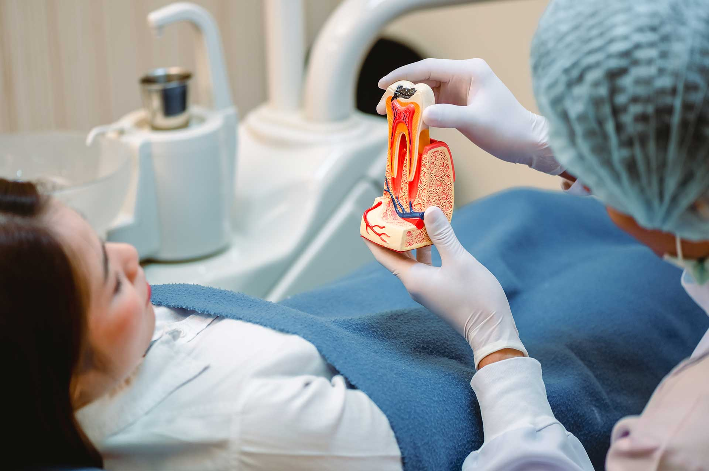

Accurate Diagnosis
We confirm the issue quickly so treatment starts without unnecessary delay.
Root canal therapy removes infection from inside the tooth so we can preserve the natural structure and restore comfort as quickly as possible.

When infection reaches the inner nerve space, a root canal can eliminate the pain source, protect the tooth, and allow for a strong final restoration.
We confirm the issue quickly so treatment starts without unnecessary delay.
Our approach is designed to ease pain and keep the process calm and controlled.
We explain every step clearly so you understand how the tooth is cleaned, sealed, and restored.
We assess pain, sensitivity, and imaging to confirm the source of infection.
The tooth is kept comfortable and isolated for a clean, precise procedure.
We remove infected tissue, disinfect the canals, and seal the tooth carefully.
A crown or filling restores strength, function, and the natural appearance of the tooth.
Root canal treatment lets us preserve your natural tooth structure while eliminating the source of discomfort and infection.
Treating the infected nerve space can bring meaningful relief from tooth pain and pressure.
Keeping your own tooth is often better than removing it when the structure can be restored.
Cleaning and sealing the canals helps prevent bacteria from spreading further.
Once restored, the tooth can return to normal use and support your smile again.
Many patients are surprised by how straightforward treatment can feel once they understand the process.